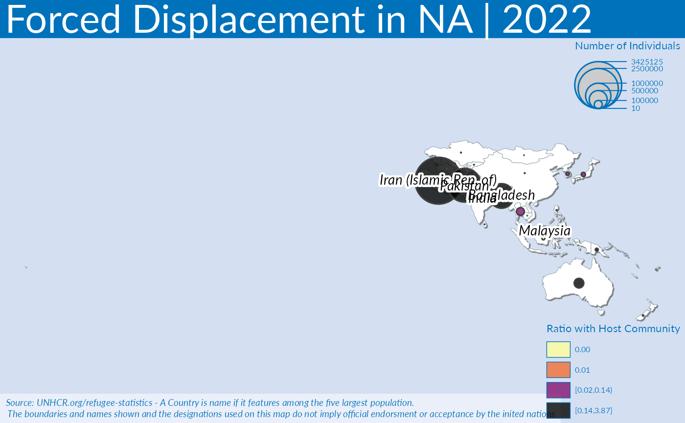

Plot a regional map
Usage
plot_reg_map(
year = 2022,
region = "The Americas",
topn = 5,
pop_type = c("REF", "ASY", "OIP"),
projection = "Mercator",
maxSymbolsize = 0.25
)Arguments
- year
Numeric value of the year (for instance 2020)
- region
Character value with the related UNHCR bureau - when left null, it will display the whole world
- topn
how many top countries to show..
- pop_type
Vector of character values. Possible population type (e.g.: REF, IDP, ASY, OIP, OOC, STA)
- projection
use a projection system - default is "Mercator" for instance this can be Bertin 1953 projection - https://visionscarto.net/bertin-projection-1953)
- maxSymbolsize
size in point to adjust for the maximum value to display on the map
Examples
plot_reg_map(
year = 2022,
region = "Asia and the Pacific",
topn = 5,
pop_type = c("REF", "ASY", "OIP"),
projection = "Mercator",
maxSymbolsize = .25
)
#> Warning: There was 1 warning in `dplyr::mutate()`.
#> ℹ In argument: `unhcr_region = countrycode::countrycode(coa_iso, "iso3c",
#> "unhcr.region")`.
#> Caused by warning:
#> ! Some values were not matched unambiguously: UNK
#> Warning: There was 1 warning in `stopifnot()`.
#> ℹ In argument: `unhcr_region = countrycode::countrycode(iso_a3, "iso3c",
#> "unhcr.region")`.
#> Caused by warning:
#> ! Some values were not matched unambiguously: -99, ATF, FLK, TWN
#> Warning: GDAL Message 1: +init=epsg:XXXX syntax is deprecated. It might return a CRS with a non-EPSG compliant axis order.
#> 'bg', 'fg', 'tab', 'pos', 'inner', 'line', 'cex' and 'font' are deprecated arguments.
#> 6 'NA' values are not plotted on the map.
#> 4 '0' values are not plotted on the map.

# plot_reg_map( year = 2022,
# region = "WestAfrica",
# topn = 5,
# pop_type = c("REF", "ASY", "OIP"),
# projection = "Mercator",
# maxSymbolsize = .25)